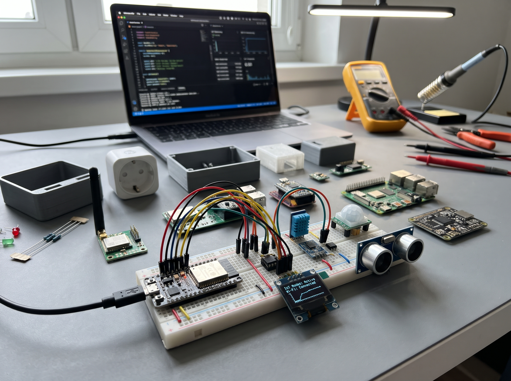

Інтернет речей (IoT) є концепцією глобальної обчислювальної мережі, що об'єднує фізичні об'єкти, оснащені вбудованими технологіями для взаємодії між собою та з навколишнім середовищем.
Завдяки інтеграції сенсорів, актуаторів та засобів бездротового зв’язку, звичайні пристрої набувають здатності автономно збирати, обробляти та передавати великі масиви даних без безпосередньої участі людини.
У межах цієї парадигми формуються складні кіберфізичні системи, які оптимізують управлінські та виробничі процеси в індустрії, медицині та житлово-комунальному господарстві.
Функціонування таких мереж критично залежить від хмарних обчислень, алгоритмів штучного інтелекту та аналітики великих даних, які забезпечують інтерпретацію отриманої інформації. Таким чином, IoT виступає фундаментальним драйвером цифрової трансформації суспільства, кардинально змінюючи архітектуру сучасних інформаційних систем та технологічний устрій загалом.

